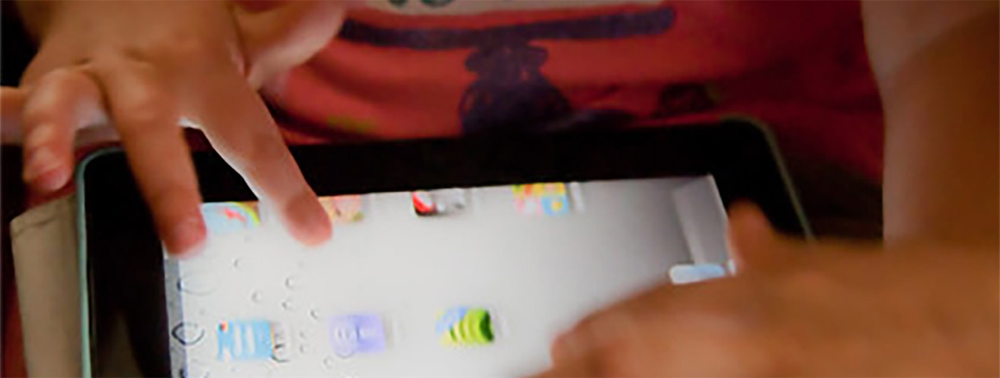

Cyberbullying
Image 1
|
Dolly's Dream (Are Your Words Doing Damage) |
Kids Help Line: https://kidshelpline.com.au/cyberbullying
eSafety Commissioner: https://www.esafety.gov.au/key-issues/cyberbullying
Dolly"s Dream: https://dollysdream.org.au/parent-hub/
© Copyright 2022. Craig